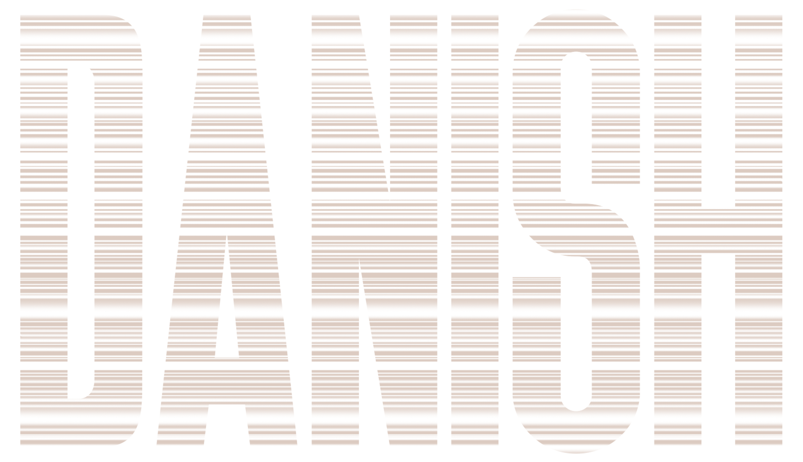
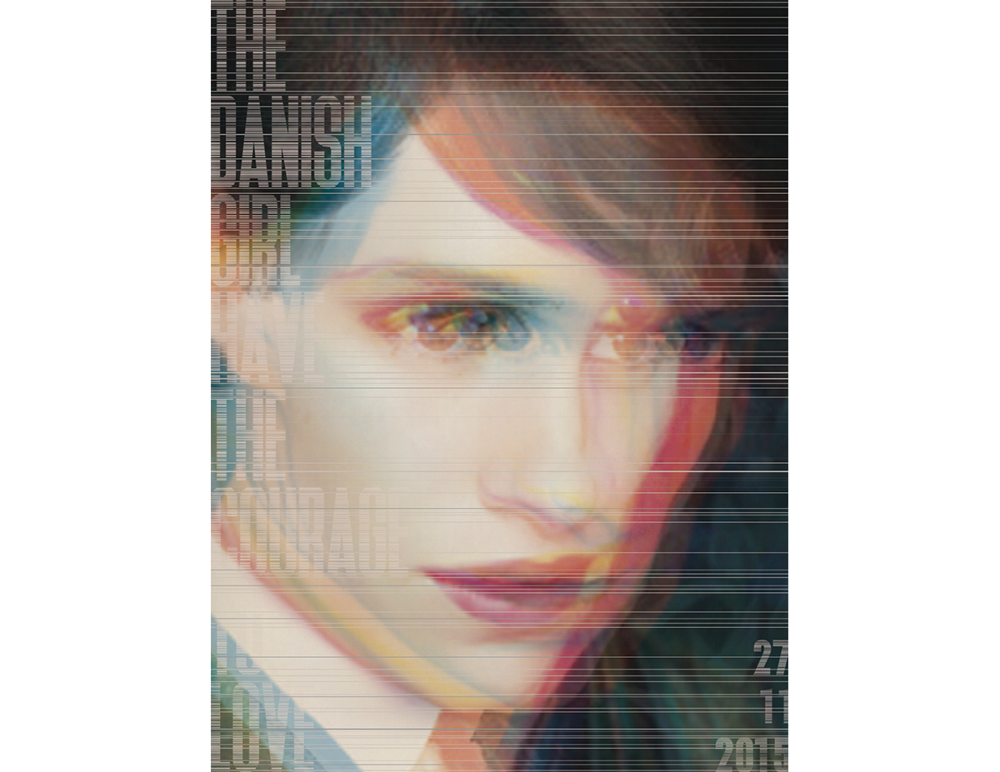

–– 2017
This project requires to use Adobe Photoshop to design a poster for a movie you like. The style of the poster is related to the art movement involved in the class, and you need to find a sign of this style to imitate and design your poster.
Tools: Adobe Photoshop

In all art movements, I prefer the New Wave. The New Wave was influenced by the International Style. New Wave design was influenced by Punk and postmodern language theory. But there is a debate as to whether New Wave is a break or a natural progression of the Swiss Style. Sans-serif font still predominates, but the New Wave differs from its predecessor by stretching the limits of legibility. The break from the grid structure meant that type could be the set center, ragged left, ragged right, or chaotic. The artistic freedom produced common forms, such as the bold stairstep. The text hierarchy also strayed from the top-down approach of the International Style. The text became textured with the development of transparent film and the increase in the college in graphic design. Further breakdown of minimalist aesthetic is seen in the increase of the number of type sizes and colours of fonts.
In all the New Wave style poster, I like Melchior Imboden's works. His work has an energetic colour vibration, and the use of colour is high contrast and bold. The elements involved are fonts, shapes, lines and spatial relationships. His work also shows his deep interest and participation in photography. He creates a dense active graphics space that limits colours and oversized sans serif fonts to or beyond the edge of the poster. He also loves to overlap different elements.


One of his poster let me thought about the movies that I saw before. The Danish Girl, about The world's first recorded transsexual, came to my mind immediately. In the first half of the film, the hero appears as a male figure and the second half as a female figure. So I found another poster that I like from Melchior, I want to combind both's design elements in to my movies; poster.
4.1 I found a The Danish Girl poster, and edited in Photoshop.

4.2Made them become two CMYK images.
4.3 And then, I overlapped the eight CMYK images into two images.
The front is sans-serif. I also paid particular attention to the style of grids and Photoshop skills.
Before this project, I had never used photoshop at all. Therefore, I learned a lot of photoshop skills in this project. Many design principles are applied, such as alignment. In addition, I have a deeper understanding of the New Wave style movement. Finally, the professor was very satisfied with my poster design.
